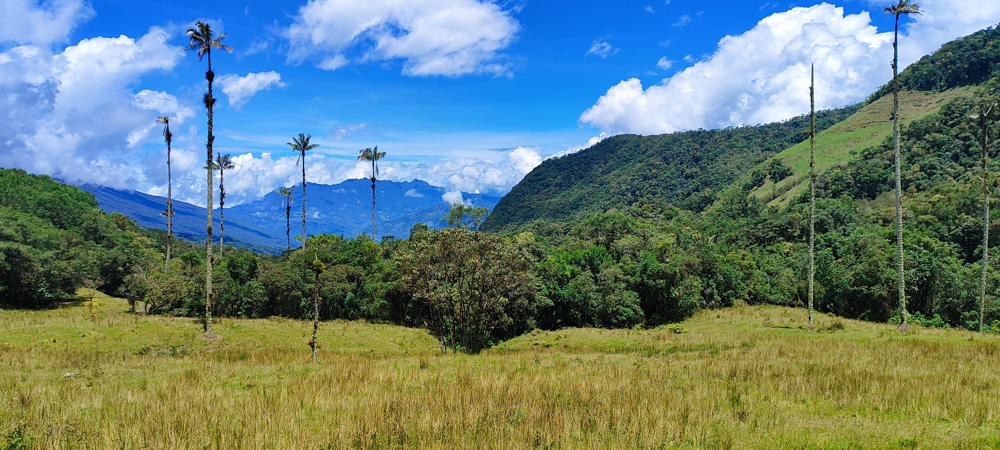
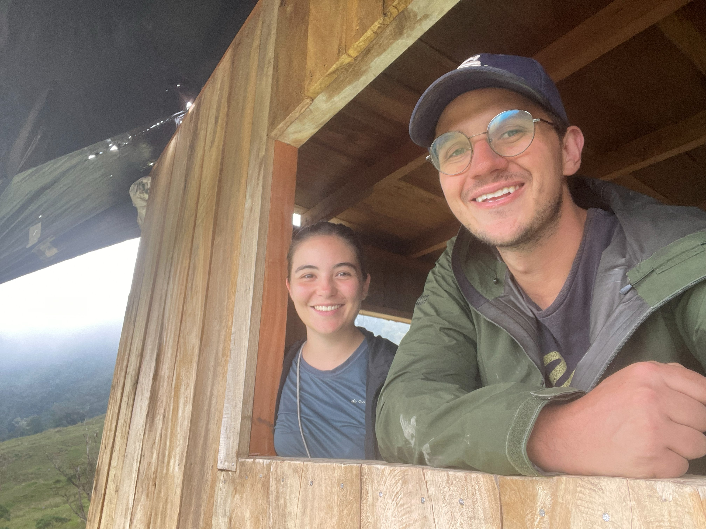
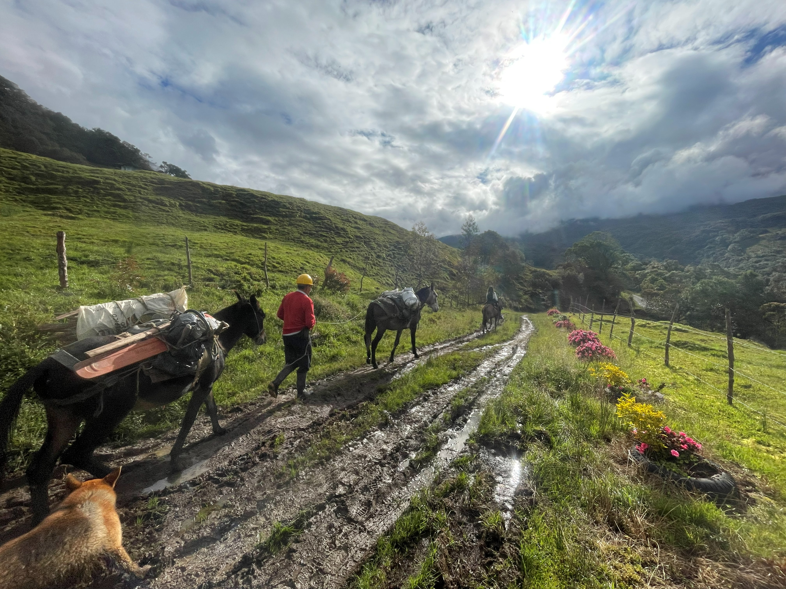
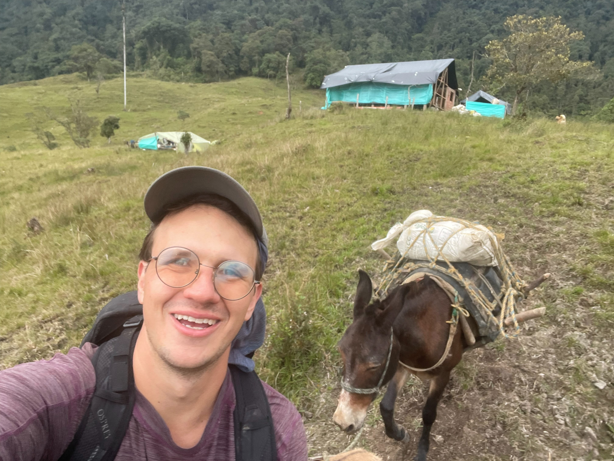
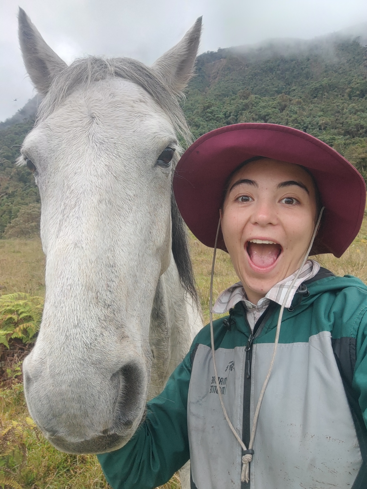
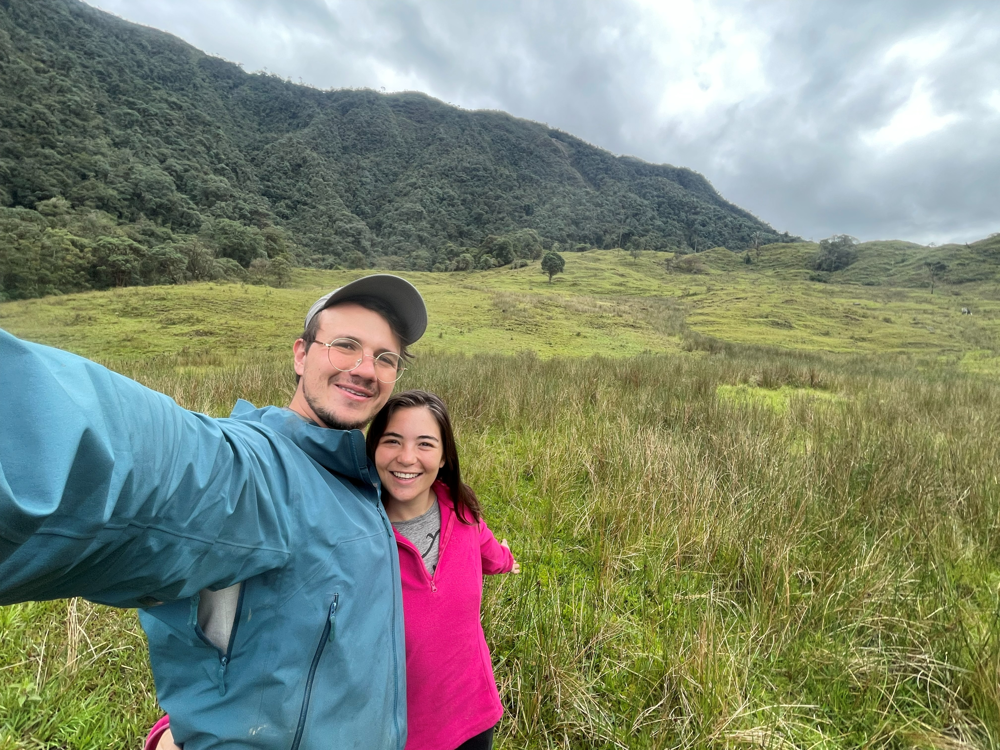
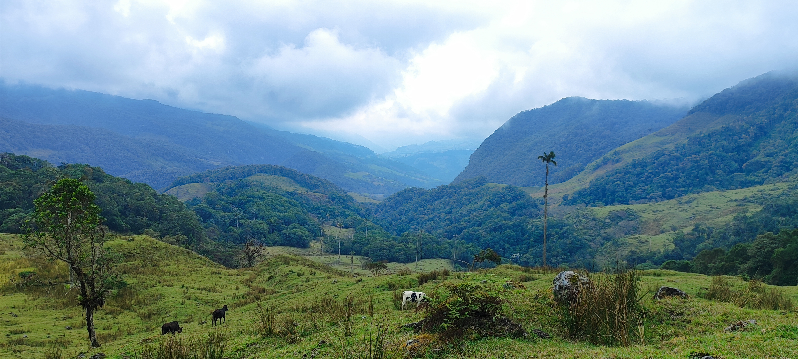
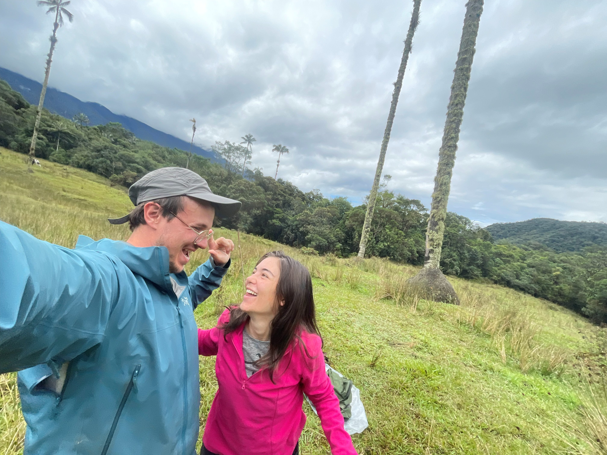
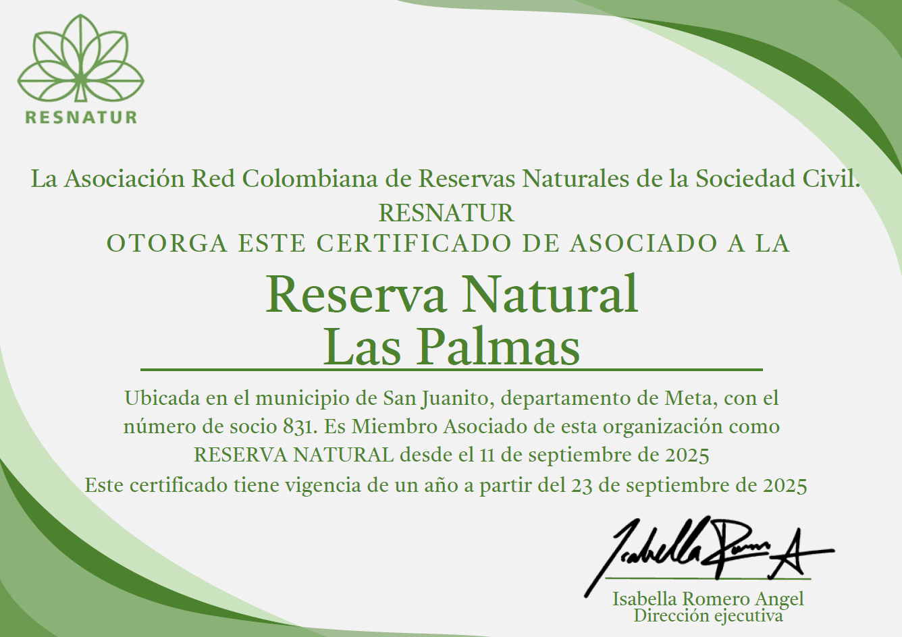
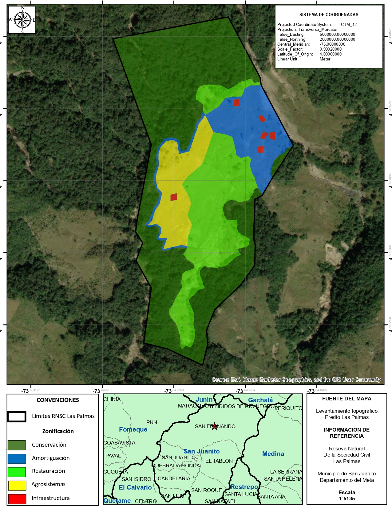

Primera Reserva Natural de la Sociedad Civil de San Juanito, Meta The First Civil Society Nature Reserve of San Juanito, Meta
Un refugio de bosque andino para investigar, educar, restaurar y conservar An Andean cloud forest sanctuary for research, education, restoration, and conservation





Quiénes somos About us
Nico y Maria E Nico & Maria E
Somos una pareja de ecólogos que a principios de 2025 se decidió mudar al municipio de San Juanito y adquirir un predio con un objetivo claro: crear una reserva natural.
We are a couple of ecologists who, in early 2025, decided to move to the municipality of San Juanito and acquire a piece of land with one clear goal: to create a nature reserve.
Reserva Las Palmas es una apuesta de vida construida desde la experiencia de campo, la investigación y el compromiso cotidiano con los bosques andinos. Una parte significativa del predio corresponde a bosque maduro que nunca ha sido aprovechado, lo que le otorga un altísimo valor ecológico y un gran potencial para la investigación científica.
Reserva Las Palmas is a life's commitment, built from field experience, research, and daily dedication to Andean forests. A significant portion of the land is mature forest that has never been logged, which gives it exceptional ecological value and great potential for scientific research.
Por esta riqueza natural, el proyecto está enfocado en atraer a la comunidad científica y educativa, ofreciendo un espacio para explorar, estudiar y aprender de un ecosistema de montaña poco investigado y de alta biodiversidad. Al mismo tiempo, buscamos abrir espacios de educación experiencial para que niños y jóvenes del territorio crezcan en contacto directo con el bosque que los rodea.
Because of this natural richness, the project is focused on engaging the scientific and educational community, offering a space to explore, study, and learn from an under-researched, highly biodiverse mountain ecosystem. At the same time, we hope to open experiential education spaces so that children and young people from the area can grow up in direct contact with the forest around them.
La Reserva The Reserve
Bosque de niebla en la Cordillera Oriental Cloud forest in the Eastern Andes
Somos la primera reserva natural del municipio de San Juanito. Aunque gran parte del predio fue usado para ganadería por más de 60 años, aún conserva bosque de niebla en muy buen estado, gracias a que el predio no tiene acceso con carretera.
We are the first nature reserve in the municipality of San Juanito. Although much of the property was used for cattle ranching for more than 60 years, it still preserves cloud forest in excellent condition, thanks to the fact that the land has no road access.
Por el momento no tenemos los primeros inventarios de biodiversidad, pero sabemos que nos encontramos entre el AICA de la cuenca del río Guatiquía y el AICA del Parque Nacional Chingaza, y muy cerca del KBA del mismo parque; lo que nos convierte en un hotspot de biodiversidad aún por descubrir.
We don't yet have the reserve's first biodiversity inventories, but we know we sit between the Guatiquía River Basin Important Bird Area (AICA) and the Chingaza National Park Important Bird Area (AICA), and very close to the same park's Key Biodiversity Area (KBA) — making us a biodiversity hotspot still waiting to be discovered.

UbicaciónLocation
Ubicada en la vereda San Luis de Toledo, San Juanito (Meta), la reserva colinda con el Parque Nacional Natural Chingaza y se encuentra en un punto estratégico del municipio: está en la frontera entre las áreas de desarrollo agropecuario y extensas zonas de bosque primario, donde además se encuentra la población más grande de palma de cera de la cordillera oriental.
Located in the San Luis de Toledo district, San Juanito (Meta), the reserve borders Chingaza National Natural Park and sits at a strategic point in the municipality: on the frontier between areas of agricultural development and extensive primary forest zones, home to the largest wax palm population in the Eastern Andes.
En este mapa puedes encontrar nuestra ubicación en Google Maps, explorar nuestro plan de manejo y ver cómo llegar desde el centro urbano:
On this map you can find our location on Google Maps, explore our management plan, and see how to get here from town:
Ver en Google Maps View on Google Maps- 32.6 haárea totaltotal area
- 17.2 habosque en conservaciónforest under conservation
- 6.8 haárea de restauraciónrestoration area
- 2025inicio del proyectoproject began

ClimaClimate
La reserva se encuentra en una franja de bosque andino de niebla, entre los 2.200 y 2.400 msnm. El clima cuenta con presencia frecuente de niebla y nubes bajas durante buena parte del año. Las temperaturas oscilan generalmente entre 12°C y 20°C, y la precipitación es alta, como corresponde a la zona de influencia de Chingaza, uno de los sistemas más lluviosos de la cordillera oriental.
The reserve sits within a band of Andean cloud forest, between 2,200 and 2,400 meters above sea level. The climate features frequent fog and low clouds for much of the year. Temperatures generally range between 12°C and 20°C, and rainfall is high, consistent with the area of influence of Chingaza, one of the rainiest systems in the Eastern Andes.

Fauna y floraWildlife & flora
La reserva y sus zonas aledañas albergan una gran diversidad de flora y fauna, con varias especies endémicas y raras. Entre ellas se encuentran el loro orejiamarillo (Ognorhynchus icterotis), el águila andina (Spizaetus isidori), abejas nativas sin aguijón (Melipona nigrescens) y dos especies de palma de cera (Ceroxylon quindiuense y C. vogelianum), además de una importante diversidad de aves y orquídeas.
The reserve and its surrounding areas are home to a great diversity of flora and fauna, including several endemic and rare species. Among them are the yellow-eared parrot (Ognorhynchus icterotis), the Andean eagle (Spizaetus isidori), stingless native bees (Melipona nigrescens), and two species of wax palm (Ceroxylon quindiuense and C. vogelianum), along with a significant diversity of birds and orchids.

Bosque primarioPrimary forest
Este bosque alberga especies arbóreas de gran valor como el encenillo (Weinmannia tomentosa), el amarillo (Ocotea pedicellata), el lacre (Vismia sp.), la cuacha (Hyeronima rufa) y muchas otras. La presencia de árboles maduros de estas especies, que en otras zonas del país han sido fuertemente explotadas, hace de este bosque un espacio único para estudiar e investigar.
This forest is home to highly valuable tree species such as encenillo (Weinmannia tomentosa), amarillo (Ocotea pedicellata), lacre (Vismia sp.), cuacha (Hyeronima rufa), and many others. The presence of mature trees of these species — heavily exploited elsewhere in the country — makes this forest a unique place to study and research.
Nuestro Camino Our Journey
Desde 2025 hemos ido construyendo, aprendiendo y descubriendo cómo conservar este territorio. Este es el camino que hemos recorrido y los pasos que nos esperan.
Since 2025 we've been building, learning, and discovering how to conserve this land. This is the path we've walked so far, and the steps that lie ahead.
PasadoPast
En marzo de 2025 comenzó el sueño de trabajar por la conservación. Compramos un predio de 32,8 hectáreas llamado Las Palmas, un lugar sin carretera, con hermosas vistas y abundante agua.
In March 2025 the dream of working for conservation began. We bought a 32.8-hectare property called Las Palmas — a place with no road access, beautiful views, and abundant water.
Sin un plan completamente definido, pero con una meta clara, decidimos aventurarnos a aprender a ser ecólogos con el bosque como laboratorio y de la mano de la comunidad que habita este territorio.
Without a fully defined plan, but with a clear goal, we set out to learn to be ecologists with the forest as our laboratory, hand in hand with the community that lives in this territory.

Decidimos asociarnos a la Red Colombiana de Reservas Naturales de la Sociedad Civil, dando a conocer nuestra intención de convertir el predio Las Palmas en Reserva.
We decided to join the Colombian Network of Civil Society Nature Reserves, announcing our intention to turn the Las Palmas property into a reserve.
Este fue nuestro primer paso para consolidar una iniciativa de conservación y aspirar a convertirnos en la primera Reserva Natural de la Sociedad Civil del municipio de San Juanito.
This was our first step toward consolidating a conservation initiative and aspiring to become the first Civil Society Nature Reserve in the municipality of San Juanito.

PresentePresent
En agosto de 2025 iniciamos la construcción de una cabaña rústica, hecha en su mayoría con madera obtenida del mismo predio.
In August 2025 we began building a rustic cabin, made mostly from wood harvested on the property itself.
Aunque inicialmente estimábamos que la construcción tomaría cuatro meses, todavía seguimos en obra debido a las dificultades logísticas.
Although we initially estimated the construction would take four months, we're still working on it due to logistical challenges.
Aun así, estamos muy orgullosos de lo que hemos logrado avanzar. Construir en este lugar significa enfrentarse a unas dificultades particulares: cuando los materiales no pueden llegar a lomo de mula, muchas veces toca transportarlos a hombro.
Even so, we're very proud of how far we've come. Building in this place means facing particular difficulties: when materials can't reach us by mule, they often have to be carried in on someone's shoulders.
Con el acompañamiento de Conservación Internacional, reunimos y presentamos la documentación necesaria ante Parques Nacionales Naturales para registrar Las Palmas como Reserva Natural de la Sociedad Civil.
With support from Conservation International, we gathered and submitted the documentation required by Colombia's National Natural Parks agency to register Las Palmas as a Civil Society Nature Reserve.
El proceso ya está en marcha y el 13 de agosto de 2026 recibiremos la visita técnica de Parques Nacionales, un paso fundamental antes de la decisión final de registro.
The process is already underway, and on August 13, 2026 we'll receive the technical site visit from Parques Nacionales — a key step before the final registration decision.

En agosto de 2026 nace Fundación Cuacha, una organización creada para apoyar y financiar los objetivos de conservación y restauración de la Reserva.
In August 2026, Fundación Cuacha was born — an organization created to support and finance the reserve's conservation and restoration goals.
La Fundación busca convertirse en una herramienta para acceder a financiación de proyectos de conservación, investigación y restauración, tanto en Las Palmas como en otros territorios del país.
The foundation aims to become a vehicle for accessing funding for conservation, research, and restoration projects, both at Las Palmas and in other territories across the country.
Su propósito va más allá de la Reserva: queremos desarrollar proyectos de investigación, consultoría y restauración que contribuyan a la conservación de los ecosistemas en Colombia.
Its purpose goes beyond the reserve: we want to develop research, consulting, and restoration projects that contribute to ecosystem conservation throughout Colombia.
Conoce Fundación Cuacha → Meet Fundación Cuacha →Hacia dónde vamos Where we're headed
Lo que hemos hecho hasta ahora es apenas el comienzo. Estos son los próximos pasos para conocer, proteger, restaurar y hacer crecer la Reserva.
What we've done so far is just the beginning. These are the next steps to know, protect, restore, and grow the reserve.
FuturoFuture
Conocer lo que tenemos para poder protegerlo.Getting to know what we have so we can protect it.
- Inventarios de biodiversidad de flora y fauna.Flora and fauna biodiversity inventories.
- Exploración y documentación de sitios de interés dentro de la Reserva.Exploration and documentation of points of interest within the reserve.
Consolidar la protección física y el manejo adecuado del territorio.Consolidating physical protection and proper management of the land.
- Cercado y división según el Plan de Manejo.Fencing and zoning according to the management plan.
- Mejoramiento y adecuación de caminos y senderos.Improving and upgrading roads and trails.
Recuperar y fortalecer los ecosistemas del territorio.Recovering and strengthening the land's ecosystems.
- Construcción del vivero de plantas nativas.Building a native-plant nursery.
- Adaptación de suelos para proyectos de restauración.Soil preparation for restoration projects.
Desarrollar sistemas que permitan que la Reserva funcione de manera cada vez más autónoma y sostenible.Developing systems that let the reserve operate in an increasingly self-sufficient and sustainable way.
- Energía solar.Solar power.
- Energía hidráulica.Hydro power.
- Huerta autosostenible.A self-sustaining garden.
Crear la infraestructura necesaria para recibir personas y desarrollar actividades relacionadas con la conservación.Creating the infrastructure needed to host people and carry out conservation-related activities.
- Kiosco para trabajo, reuniones y eventos.A kiosk for work, meetings, and events.
- Cabina de baños.A bathroom cabin.
- Dos cabañas iniciales para hospedar grupos.Two initial cabins to host groups.
No estamos construyendo infraestructura simplemente porque sí: estamos creando lo necesario para que la Reserva pueda recibir personas y cumplir sus objetivos de conservación.
We're not building infrastructure just for the sake of it: we're creating what's needed so the reserve can host people and fulfill its conservation goals.
Y esto apenas comienza.
And this is only the beginning.
La Reserva seguirá creciendo, aprendiendo y transformándose. Nuevos proyectos surgirán de las necesidades del territorio y de todo lo que descubramos en el camino.
The reserve will keep growing, learning, and transforming. New projects will emerge from the needs of the land and everything we discover along the way.
Fundación Cuacha Fundación Cuacha
La Fundación Cuacha nace para darle estructura formal a nuestro trabajo de conservación. Su objeto es la conservación, restauración y recuperación de ecosistemas, la investigación científica, la educación ambiental y el desarrollo sostenible del territorio.
Fundación Cuacha was created to give our conservation work a formal structure. Its purpose is the conservation, restoration, and recovery of ecosystems, scientific research, environmental education, and sustainable development of the territory.
Recién la registramos y todavía estamos en proceso de formalización, así que por ahora no contamos con canales de donación. Si quieres saber más sobre la fundación o mantenerte al tanto de su desarrollo, escríbenos.
We just registered it and are still in the process of formalizing it, so for now we don't have donation channels available. If you'd like to learn more about the foundation or stay updated on its progress, write to us.
Escríbenos Write to usInvolúcrate Get Involved
Hablemos Let's talk
Ya sea que quieras donar a través de Fundación Cuacha, apadrinar árboles para la restauración, proponer un proyecto de investigación, visitar la reserva, o simplemente saber más — escríbenos por el formulario, correo o WhatsApp/llamada.
Whether you want to donate through Fundación Cuacha, sponsor trees for restoration, propose a research project, visit the reserve, or simply learn more — reach out via the form, email, or WhatsApp/call.
Formas de apoyarWays to help
- DonarDonate a través de Fundación Cuacha. Aún no tenemos pasarela de pago en línea — escríbenos por el formulario, correo o WhatsApp/llamada y coordinamos tu aporte directamente. through Fundación Cuacha. We don't have an online payment gateway yet — reach out via the form, email, or WhatsApp/call and we'll arrange your contribution directly.
- Apadrinar árbolesSponsor trees para el vivero y la restauración de las ~7 hectáreas de potrero. Contáctanos para conocer cómo apadrinar árboles de la reserva. for the nursery and the restoration of nearly 7 hectares of pastureland. Contact us to find out how to sponsor trees for the reserve.
- VisitarVisit la reserva no tiene alojamiento turístico abierto todavía, pero si te interesa una visita —individual, académica o institucional— escríbenos y lo conversamos. the reserve doesn't have tourism lodging open yet, but if you're interested in a visit — individual, academic, or institutional — write to us and let's talk.
- ColaborarCollaborate si representas una universidad, colegio o institución interesada en investigación o educación ambiental. if you represent a university, school, or institution interested in research or environmental education.
- CompartirSpread the word cuéntale a alguien sobre la reserva. El primer paso de la conservación comunitaria es que más personas la conozcan. tell someone about the reserve. The first step in community conservation is more people knowing it exists.
Contacto directoDirect contact
- reservalaspalmas.sj@gmail.com
- +57 320 344 4264 (Nicolás)(Nicolás) · WhatsApp
- +57 317 777 7215 (María Emilia)(María Emilia) · WhatsApp
- San Juanito, Meta — Vereda San Luis de Toledo, ColombiaSan Juanito, Meta — San Luis de Toledo district, Colombia